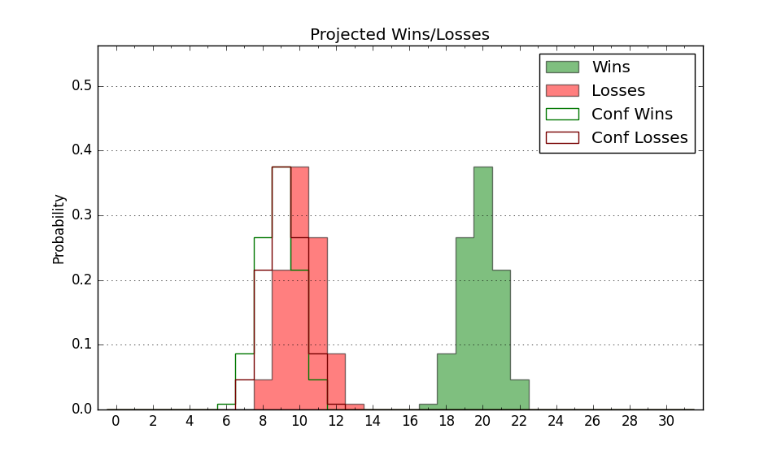

| Home | Game Probabilities | Conferences | Preseason Predictions | Odds Charts | NCAA Tournament |
| City: | Berkeley, California | |
| Conference: | ACC (9th)
| |
| Record: | 6-7 (Conf) 17-8 (Overall) | |
| Ratings: | Comp.: 13.7 (68th) Net: 13.7 (68th) Off: 116.1 (79th) Def: 102.4 (64th) SoR: 22.8 (54th) |
| Remaining | ||||||
|---|---|---|---|---|---|---|
| Date | Opponent | Win Prob | Pred. | |||
| 2/21 | Stanford (72) | 66.6% | W 77-73 | |||
| 2/25 | SMU (29) | 38.7% | L 79-82 | |||
| 2/28 | Pittsburgh (113) | 79.3% | W 75-67 | |||
| 3/4 | @ Georgia Tech (157) | 67.1% | W 79-74 | |||
| 3/7 | @ Wake Forest (59) | 32.8% | L 74-79 | |||
| Previous | Game Score | |||||
| Date | Opponent | Win Prob | Result | Off | Def | Net |
| 11/3 | Cal St. Bakersfield (314) | 97.3% | W 87-60 | -10.6 | 7.3 | -3.2 |
| 11/6 | Wright St. (143) | 85.0% | W 77-67 | -8.9 | 7.5 | -1.5 |
| 11/10 | Cal St. Fullerton (184) | 89.1% | W 93-65 | 0.1 | 15.1 | 15.2 |
| 11/13 | @Kansas St. (94) | 45.7% | L 96-99 | 15.7 | -10.0 | 5.8 |
| 11/18 | Presbyterian (265) | 94.9% | W 67-57 | -10.8 | -8.6 | -19.3 |
| 11/21 | Sacramento St. (236) | 93.4% | W 91-67 | -7.4 | 9.8 | 2.5 |
| 11/25 | (N) UCLA (40) | 34.8% | W 80-72 | 9.0 | 12.6 | 21.6 |
| 12/2 | Utah (102) | 77.4% | W 79-72 | -1.3 | -1.0 | -2.4 |
| 12/6 | Pacific (107) | 77.9% | W 67-61 | -3.1 | 0.8 | -2.3 |
| 12/13 | Northwestern St. (289) | 95.8% | W 79-70 | -6.3 | -11.1 | -17.5 |
| 12/19 | Morgan St. (358) | 99.1% | W 97-50 | 7.5 | 15.5 | 23.0 |
| 12/21 | Columbia (179) | 88.8% | W 74-56 | -8.1 | 16.8 | 8.7 |
| 12/30 | Louisville (10) | 22.9% | L 70-90 | -7.0 | -10.2 | -17.2 |
| 1/2 | Notre Dame (81) | 70.0% | W 72-71 | -1.4 | -9.0 | -10.4 |
| 1/7 | @Virginia (23) | 12.6% | L 60-84 | -9.6 | -4.1 | -13.7 |
| 1/10 | @Virginia Tech (56) | 32.4% | L 75-78 | 8.0 | -6.1 | 1.8 |
| 1/14 | Duke (2) | 10.1% | L 56-71 | -11.4 | 8.6 | -2.9 |
| 1/17 | North Carolina (28) | 38.7% | W 84-78 | 11.7 | 0.4 | 12.1 |
| 1/24 | @Stanford (72) | 36.9% | W 78-66 | 4.3 | 19.1 | 23.4 |
| 1/28 | @Florida St. (83) | 41.7% | L 61-63 | -18.0 | 17.9 | -0.1 |
| 1/31 | @Miami FL (39) | 20.4% | W 86-85 | 25.1 | -12.8 | 12.2 |
| 2/4 | Georgia Tech (157) | 87.4% | W 90-85 | 0.1 | -16.1 | -16.1 |
| 2/7 | Clemson (35) | 44.5% | L 55-77 | -21.1 | -13.1 | -34.2 |
| 2/11 | @Syracuse (77) | 38.7% | L 100-107 | 3.6 | -8.8 | -5.2 |
| 2/14 | @Boston College (150) | 64.6% | W 86-75 | 29.1 | -18.0 | 11.1 |
| Stats & Trends | |||||
|---|---|---|---|---|---|
| Current | Day | Week | Month | Season | |
| Composite | 13.7 | -0.0 | +0.5 | -0.1 | +4.0 |
| Comp Rank | 68 | -1 | -- | -4 | +6 |
| Net Efficiency | 13.7 | -0.0 | +0.5 | -0.4 | -- |
| Net Rank | 68 | -1 | -- | -5 | -- |
| Off Efficiency | 116.1 | +0.0 | +1.2 | +1.7 | -- |
| Off Rank | 79 | +2 | +7 | +16 | -- |
| Def Efficiency | 102.4 | -0.0 | -0.8 | -2.2 | -- |
| Def Rank | 64 | +1 | -4 | -10 | -- |
| SoS Rank | 80 | -1 | -6 | +32 | -- |
| Exp. Wins | 19.8 | -0.0 | +0.4 | +0.5 | +2.2 |
| Exp. Conf Wins | 8.8 | -0.0 | +0.4 | +0.5 | +0.5 |
| Conf Champ Prob | 0.0 | -- | -- | -- | -2.9 |

| Advanced Stats | ||
|---|---|---|
| Stat | Value | Rank |
| Off Eff FG % | 0.555 | 64 |
| Off Ast Ratio | 0.164 | 80 |
| Off ORB% | 0.262 | 297 |
| Off TO Rate | 0.131 | 79 |
| Off FT Ratio | 0.404 | 67 |
| Def Eff FG % | 0.475 | 50 |
| Def Ast Ratio | 0.143 | 146 |
| Def ORB% | 0.279 | 87 |
| Def TO Rate | 0.141 | 226 |
| Def FT Ratio | 0.339 | 163 |